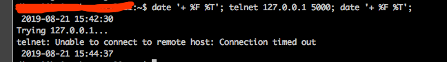
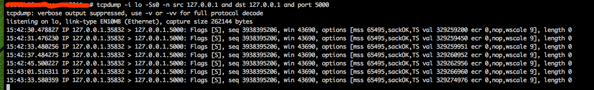
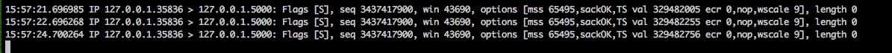

一 参数作用
- net.ipv4.tcp_syn_retries 的设置,表示应用程序进行connect()系统调用时，在对方不返回SYN + ACK的情况下(也就是超时的情况下)，第一次发送之后，内核最多重试几次发送SYN包;并且决定了等待时间.
- Linux上的默认值是 net.ipv4.tcp_syn_retries = 6 ,也就是说如果是本机主动发起连接,(即主动开启TCP三次握手中的第一个SYN包),如果一直收不到对方返回SYN + ACK ,那么应用程序最大的超时时间就是127秒
二 详细说明
注：这里只分析 TCP 连接超时
Linux 系统默认的建立 TCP 连接的超时时间为 127 秒，对于许多客户端来说，这个时间都太长了， 特别是当这个客户端实际上是一个服务的时候，更希望能够尽早失败，以便能够选择其它的可用服务重新尝试。
socket对象是Linux下应用程序需要用到的和远端建立TCP或者UDP连接的对象.
系统调用 connect(2) 则是用来尝试建立 socket 连接（TCP）的函数。 connect 对于 UDP 来说并不是必须的，而对于 TCP 来说则是一个必须过程，著名的 TCP 3 次握手实际上也由 connect 来完成。
网络中的连接超时非常常见，不管是广域网还是局域网，为了一定程度上容忍失败，所以连接加入了重试机制， 而另一方面，为了不给服务端带来过大的压力，重试也是有限制的。
在 Linux 中，连接超时典型为 2 分 7 秒，而对于一些 client 来说，这是一个非常长的时间；
下面来看看 2 分 7 秒是怎样来的，以及怎样配置 Linux kernel 来缩短这个超时。
2 分 7 秒即 127 秒，刚好是 2 的 7 次方减一，聪明的读者可能已经看出来了，如果 TCP 握手的 SYN 包超时重试按照 2 的幂来 backoff， 那么：
- 第 1 次发送 SYN 报文后等待 1s（2 的 0 次幂），如果超时，则重试
- 第 2 次发送后等待 2s（2 的 1 次幂），如果超时，则重试
- 第 3 次发送后等待 4s（2 的 2 次幂），如果超时，则重试
- 第 4 次发送后等待 8s（2 的 3 次幂），如果超时，则重试
- 第 5 次发送后等待 16s（2 的 4 次幂），如果超时，则重试
- 第 6 次发送后等待 32s（2 的 5 次幂），如果超时，则重试
- 第 7 次发送后等待 64s（2 的 6 次幂），如果超时，则超时失败
上面的结果刚好是 127 秒。也就是说 Linux 内核在尝试建立 TCP 连接时，最多会尝试 7 次。
接下来,我们用实验来进行验证:
首先，配置 iptables 来丢弃指定端口的 SYN 报文
# iptables -A INPUT --protocol tcp --dport 5000 --syn -j DROP
然后，打开 tcpdump 观察到达指定端口的报文
# tcpdump -i lo -Ss0 -n src 127.0.0.1 and dst 127.0.0.1 and port 5000
最后，使用 telnet 连接指定端口
date '+ %F %T'; telnet 127.0.0.1 5000; date '+ %F %T';
上面的命令输出如下:

超时时间为127秒.
tcpdump的输出如下:

从tcpdump的输出也可以看到,一共发了7次SYN包(都是同一个seq号码)，第一次是正常请求,后面6次是重试,正是该内核参数 设置的值.
三 应用层真正的超时时间
那么问题来了,应用层真正的超时时间一定是127秒吗？还是不能大于127秒. 通过上面的实验，基本可以得知应用层的超时间一定不能大于内核的设定. 如果应用层的设定小于内核的设定呢？超时时间应该是小于127秒的.我们继续通过实验来验证下.
现在我的机器上,内核参数是net.ipv4.tcp_syn_retries=6,最大超时时间是 127秒 应用层代码如下:
一个python程序,主动设置socket的超时时间为5秒.
#!/usr/bin/python
import socket
from datetime import datetime
fmt = "%Y-%m-%d %H:%M:%S"
address = ('127.0.0.1',5000)
s = socket.socket()
s.settimeout(5) #设置socket超时时间为5秒
print datetime.now().strftime(fmt)
s.connect_ex(address)
print datetime.now().strftime(fmt)
我们再来观察下应用程序的表现和tcpdump的输出
从上图可以看到，应用程序5秒就超时退出了.
再来看下tcpdump的输出:

从tcpdump的输出看到,第一次发送之后,只尝试了2次重试(2的0次+2的1次),因为第三次重试要等2的2次方秒,也就是4秒, 前面1+2 + 4是7秒,而应用层设置的超时时间是5秒,介于2～3之间,因此第三次重试不会进行. 如果应用程序设置的超时时间足够长,那么第三次重试应该在15:57:28进行.
四 总结
- net.ipv4.tcp_syn_retries是用于设置主动发起TCP连接超时时,SYN包的重试次数,该参数如果是x,那么connect(2)调用最大的超时时间为2的x次方 -1,单位是秒.
- 应用程序最大的超时时间不能超过内核的设定,可以小于等于内核的设定.
五 参考文章
本次参考文章: http://www.chengweiyang.cn/2017/02/18/linux-connect-timeout/